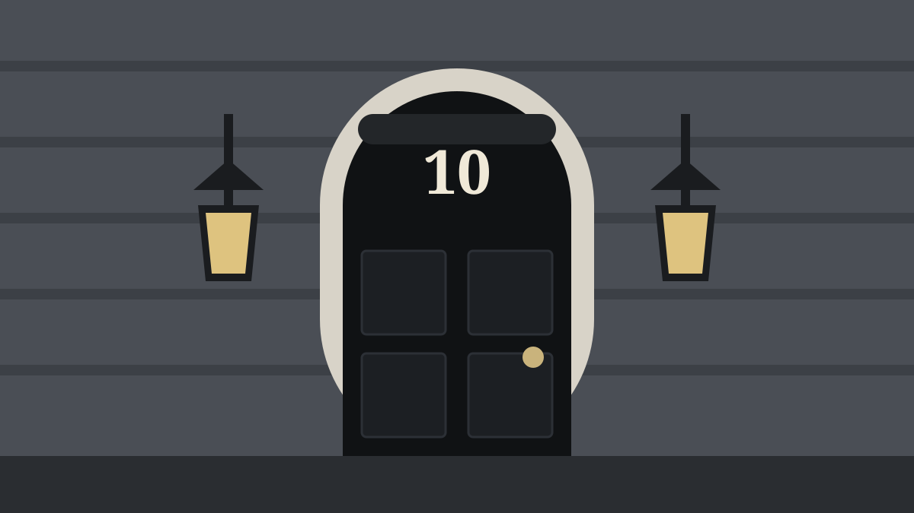

How a Government Is Formed After the Votes Are Counted
Winning the most seats is only the start. The transfer of power in Britain depends on conventions, a short conversation with the King and, sometimes, weeks of negotiation.

Election results in Britain are usually known by breakfast time. What happens next is governed less by written law than by constitutional convention, a body of practice that has been refined over centuries and was set out in a document called the Cabinet Manual in 2011. The central principle is simple: the government must be able to command the confidence of the House of Commons. Everything else follows from that.
The Prime Minister does not automatically leave
A common misconception is that a Prime Minister who loses an election is out of office at 10pm on polling night. In fact the Prime Minister remains in office until they resign, and they are expected to resign only when it is clear that someone else can command a majority in the Commons. On the morning after a decisive result this happens quickly: the outgoing Prime Minister goes to Buckingham Palace to tender their resignation, and the incoming one follows shortly afterwards to be asked by the King to form a government. Both journeys are usually complete by lunchtime.
The monarch’s role is formal. The King does not choose between rival candidates on the basis of preference; he invites the person best placed to command the confidence of the Commons, and the politicians are expected to make that person’s identity clear before he acts. The moment of appointment is known, from an older tradition, as “kissing hands”, though the phrase no longer describes what actually happens.
Majority governments
With 650 seats, 326 gives a party an overall majority. In practice the effective threshold is slightly lower because the Speaker and three Deputy Speakers do not vote in normal circumstances and Sinn Féin MPs, who do not take their seats, do not vote at all. A party with a comfortable majority can expect to pass its programme, and its leader will normally be invited to form a government within hours of the result.
The test is not who won the most votes, or even the most seats, but who can command the confidence of the House of Commons.Cabinet Manual, paraphrased
Hung parliaments
A hung parliament is one in which no party has a majority. The sitting Prime Minister remains in office and is entitled to see whether they can put together a government, though the Cabinet Manual makes clear that they should not obstruct a rival who can demonstrably do so. Several outcomes are possible:
- A coalition, in which two or more parties agree a joint programme and share ministerial posts. The 2010 Conservative–Liberal Democrat coalition is the only full coalition at Westminster since 1945, and it was negotiated in five days.
- Confidence and supply, in which a smaller party agrees to support the government on confidence votes and the Budget but is not part of the government. The Conservatives and the Democratic Unionist Party reached such an agreement in 2017.
- A minority government, which governs alone and seeks support vote by vote. Minority governments can last for years or collapse in weeks depending on the arithmetic and the mood of the House.
During negotiations the civil service supports all the parties involved, so that whatever government emerges can begin work immediately. The talks are political; the outcome is tested constitutionally when the new Parliament meets.
Key facts
- The Prime Minister stays in office until they resign or are dismissed
- 326 seats is an overall majority; the working threshold is slightly lower
- Options in a hung parliament: coalition, confidence and supply, or minority government
- The King’s Speech vote is the first formal test of confidence
The first tests
When the new Parliament assembles it elects a Speaker, members are sworn in, and the State Opening takes place. The King’s Speech, written by the government, lists the bills it intends to bring forward. Several days of debate follow, ending in a vote. A government that loses that vote cannot realistically carry on. No government has lost the vote on the King’s or Queen’s Speech since 1924, which shows how much of the real work is done in the negotiations beforehand.
Once installed, a government can be brought down by a vote of no confidence. The Fixed-term Parliaments Act 2011 briefly gave such votes a statutory form, but that Act was repealed in 2022 and the position returned to convention: if the Commons expresses no confidence in the government, the Prime Minister is expected either to resign or to seek a dissolution and a fresh election.
Building the government
In the days after appointment the Prime Minister names the Cabinet and the roughly 100 other ministers who make up the government, all drawn from the Commons or the Lords. The largest opposition party forms the Official Opposition, with a shadow cabinet that mirrors the government’s. Within a fortnight of an election the new Parliament is usually sitting, questions are being asked and the whole cycle, which will end in another dissolution within five years, has begun again.
The Cabinet Manual is published by the Cabinet Office and is the authoritative description of these conventions. It is guidance rather than law.